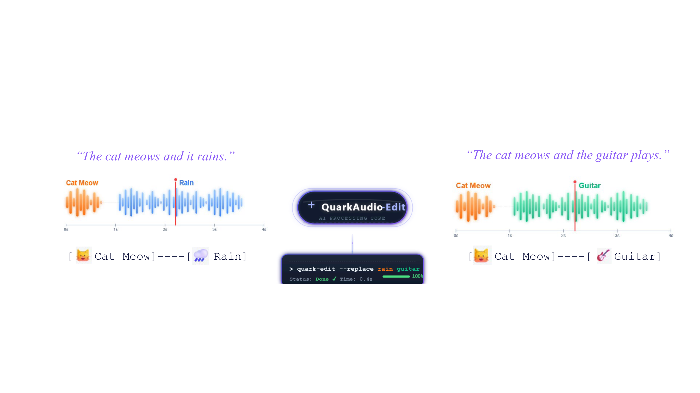
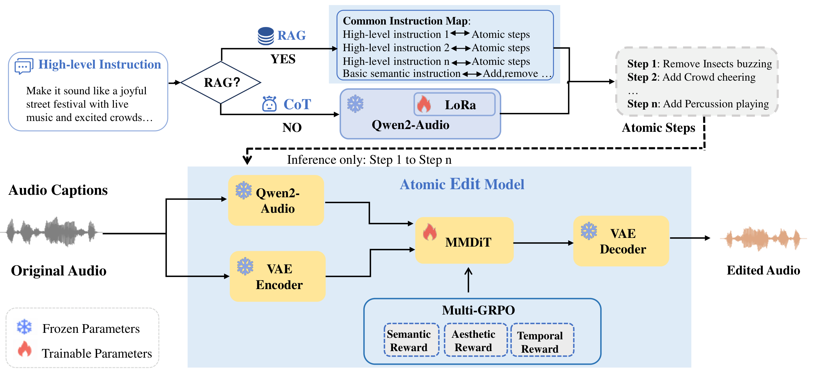
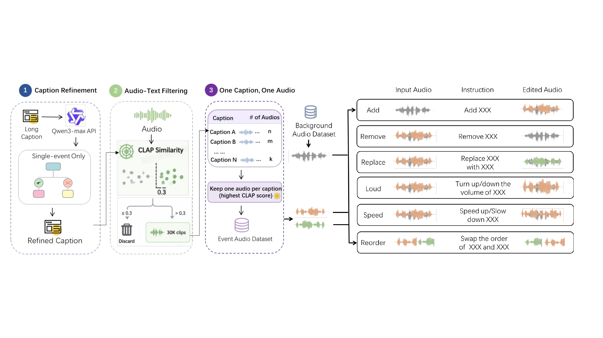
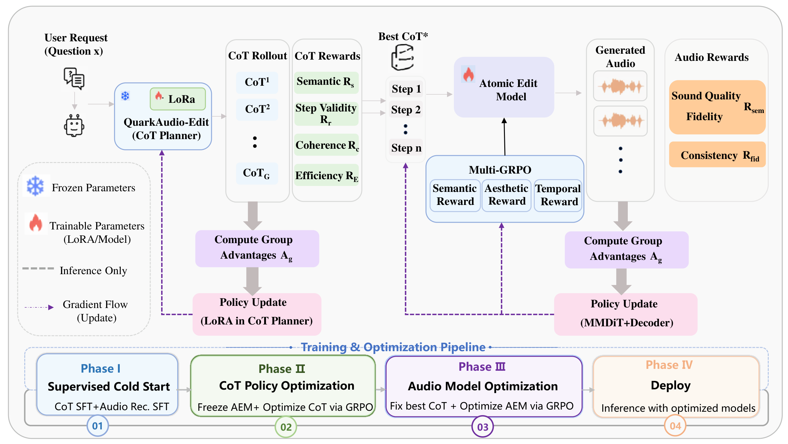
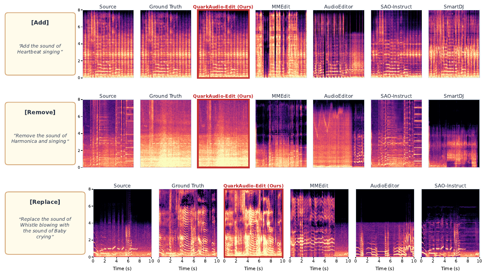
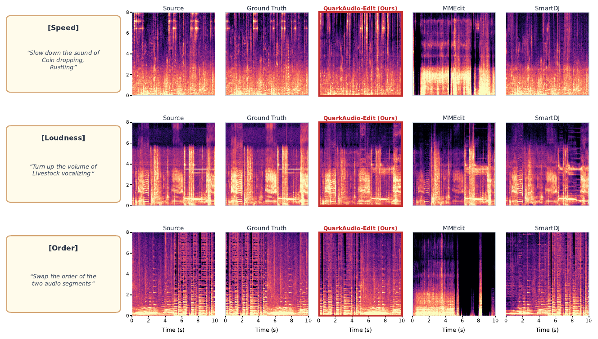

Text-guided audio editing aims to modify input audio according to natural-language instructions. Existing systems support limited editing operations and rely on fixed instruction templates, struggling with complex, multi-step instructions that require decomposing implicit user intent into executable atomic operations. We present QuarkAudio-Edit, a unified framework that decouples CoT-guided structured decomposition from diffusion-based signal editing. An audio language model (ALM) planner decomposes free-form instructions into six atomic operations via CoT reasoning, augmented by retrieval-augmented generation (RAG) with retrieved exemplars. The resulting plans are executed by an MMDiT editor trained on triplets synthesized through multi-source pipelines and online composition, further optimized via progressive reinforcement learning (PRL) with multi-rule rewards. On a declarative multi-step instruction dataset, QuarkAudio-Edit achieves FAD 3.27, reducing FAD by 21.2% over the strongest baseline (SmartDJ, 4.15) and by 41.4% over MMEdit, while attaining the highest CLAP similarity (0.241) among all compared systems.
QuarkAudio-Edit addresses four limitations of existing text-guided audio editing (TAE) systems: limited operation coverage, rigid instruction formats, absence of chain-of-thought reasoning, and lack of reasoning-aware optimization.
Given a free-form instruction such as
“Turn this recording of birds chirping over traffic noise into a rainy evening café scene”, the
CoT–RAG planner decomposes it into a sequence of interpretable atomic
operations from the set
{Add, Remove, Replace, Speed, Loudness, Order},
which the MMDiT diffusion editor executes sequentially on the source audio.

Figure 1. QuarkAudio-Edit supports six atomic operations for sound-event editing and speech editing. It decomposes free-form instructions (e.g., “replace rain with guitar”) into verifiable steps, preserving non-target content (cat meow).
A decoupled Planner–Editor architecture that separates what to edit (high-level reasoning) from how to edit (signal-level synthesis).

Figure 2. Architecture of QuarkAudio-Edit. The ALM planner decomposes free-form instructions into atomic operations through CoT reasoning with RAG; the MMDiT editor executes them sequentially. The ALM and MMDiT modules are trained separately.
Three complementary methods produce over 500,000 triplets per epoch: Prompt-to-Prompt generation (150K offline pre-generated via Prompt-to-Prompt and manual edits), and online per-epoch composition (~350K dynamic from AudioSet and VGG-Sound).
Qwen2-Audio-7B-Instruct planner fine-tuned via LoRA on 50K instruction-decomposition pairs. Guided by top-3 retrieved exemplars from a 550K+ FAISS index (retrieval in <50 ms).
Multi-modal diffusion transformer initialized from Stable Audio Open. Source latent is concatenated with the noisy target at every denoising step for faithful non-target preservation. Inference uses 20 steps with CFG scale 5.
Two-stage reinforcement learning: Stage 1 applies multi-rule rewards on CoT chains; Stage 2 uses semantic and fidelity rewards with a progressive schedule to optimize audio quality.

Figure 3. Data synthesis pipeline. Qwen3-max converts dataset captions into structured (instruction, operation) pairs. Prompt-to-Prompt audio generation is then optimized via Bayesian parameter search with a composite CLAP + mel-spectrogram objective.

Figure 4. Progressive GRPO pipeline: Stage 1 optimizes CoT reasoning quality; Stage 2 refines acoustic fidelity with composite multi-rule rewards.
Listen to paired source and edited audio produced by QuarkAudio-Edit from free-form natural-language instructions.
Cross-domain speech editing results on the RealEdit benchmark. The same MMDiT editor backbone handles word-level insertion, deletion, and substitution without any speech-specific modifications. Spot the edited region — non-target acoustic content (timbre, prosody, background) is preserved.
| Original Transcript | Edited Transcript | Original Audio | Edited Audio |
|---|---|---|---|
| After all, who doesn't want to overcome new challenges and |
After all, who doesn't want to overcome new challenges and succeed beyond measure? | ||
| He has also worked as a teacher, lecturer, critic and broadcaster. | He has also worked in various capacities as a teacher, lecturer, critic and broadcaster. | ||
| Since work done is force times distance, mechanical power is |
Since work done is force times distance, mechanical power is the rate at which work is done. | ||
| Her cousin is a former member of the House of Representatives in Japan. | Her cousin, who resides in Tokyo, is a former member of the House of Representatives in Japan. | ||
| His heart has been affected by his anxiety, and he has another heart attack. | His heart has been affected by his anxiety, and he has another heart attack requiring immediate medical attention. |
The ALM planner decomposes each complex instruction into atomic operations via CoT reasoning, guided by top-3 exemplars retrieved from a 550K+ FAISS index.
QuarkAudio-Edit is evaluated on 3,000 single-step editing triplets (500 samples per operation) and 500 declarative complex instructions (each requiring 2–4 inferred atomic operations), consistently outperforming strong baselines across all six atomic operations. All experiments employ 10 s test samples.
500 declarative complex instructions. “Framework” distinguishes models without an ALM (w/o ALM) from those integrating one (w/ ALM). Inference time measured on a single A100 GPU for 10 s audio.
| Framework | Model | Inf. Time ↓ | LSD ↓ | FAD ↓ | FD ↓ | KL ↓ | IS ↑ | CLAP ↑ | R-MOS ↑ | F-MOS ↑ |
|---|---|---|---|---|---|---|---|---|---|---|
| w/o ALM | AudioEditor | 42.51s | 2.14 | 5.26 | 62.38 | 3.41 | 3.08 | 0.112 | 2.71±0.89 | 2.85±0.94 |
| w/ ALM | MMEdit | 19.28s | 2.23 | 5.58 | 58.92 | 3.52 | 2.96 | 0.105 | 2.95±0.85 | 3.32±0.82 |
| SAO-Instruct | 18.58s | 1.89 | 4.73 | 55.14 | 3.18 | 3.45 | 0.148 | 3.11±0.79 | 3.58±0.76 | |
| SmartDJ | 8.62s | 1.72 | 4.15 | 48.36 | 2.87 | 3.82 | 0.175 | 3.23±0.74 | 3.75±0.71 | |
| QuarkAudio-Edit | 9.85s | 1.38 | 3.27 | 35.41 | 2.18 | 4.32 | 0.241 | 3.53±0.65 | 3.98±0.58 | |
| w/o RAG | 9.72s | 1.51 | 3.59 | 38.28 | 2.42 | 4.16 | 0.225 | 3.42±0.68 | 3.86±0.62 | |
| w/o CoT | 8.25s | 1.62 | 3.89 | 41.28 | 2.61 | 4.05 | 0.212 | 3.24±0.76 | 3.61±0.74 | |
| w/o PRL | 8.25s | 1.79 | 4.48 | 46.73 | 2.85 | 3.89 | 0.186 | 3.12±0.81 | 3.42±0.79 |
FAD (Fréchet Audio Distance) measures distributional distance between generated and reference audio. Lower is better. SmartDJ results are included where the system supports the corresponding operation.
| Model | Add | Remove | Replace | Order | Loudness | Speed |
|---|---|---|---|---|---|---|
| AudioEditor | 3.57 | 4.14 | 3.54 | — | — | — |
| SAO-Instruct | 3.57 | 6.53 | 4.63 | — | — | — |
| SmartDJ | 2.86 | 4.26 | 3.26 | — | 4.26 | 5.69 |
| MMEdit | 10.18 | 10.18 | 5.92 | 10.08 | 6.72 | 9.00 |
| QuarkAudio-Edit-2task | 1.78 | 3.35 | — | — | — | — |
| QuarkAudio-Edit-6task | 1.98 | 3.50 | 2.65 | 2.89 | 3.09 | 4.34 |
Fine-grained planner ablation on 500 complex instructions. “Direct”: raw instruction without planning. “Atomic only”: ground-truth commands without reasoning. “Reasoning only”: full CoT but single-pass execution. “Full CoT”: reasoning with sequential execution.
| Configuration | LSD ↓ | FAD ↓ | FD ↓ | KL ↓ | IS ↑ | CLAP ↑ |
|---|---|---|---|---|---|---|
| Direct instruction | 2.31 | 6.80 | 62.14 | 3.15 | 2.53 | 0.098 |
| Atomic only | 1.85 | 5.44 | 47.01 | 2.74 | 3.48 | 0.162 |
| Reasoning only | 1.96 | 5.81 | 49.92 | 2.91 | 3.21 | 0.143 |
| Full CoT (ours) | 1.38 | 3.27 | 35.41 | 2.18 | 4.32 | 0.241 |
To assess cross-domain generalization, we evaluate on the RealEdit benchmark. Without any architecture changes, the MMDiT editor handles word-level insertion, deletion, and substitution by conditioning on the target transcript. The ALM planner is bypassed since speech instructions are explicit transcripts requiring no decomposition.
| Method | WER (%) ↓ | SpkSIM ↑ | MOSNet ↑ | UTMOS ↑ |
|---|---|---|---|---|
| GroundTruth | 6.06 | — | 3.34 | 3.38 |
| VoiceCraft | 6.55 | 0.9712 | 3.18 | 3.31 |
| Step-Audio-EditX | 10.76 | 0.9588 | 3.94 | 3.89 |
| MiMo-Audio | 16.86 | 0.9371 | 3.48 | 3.38 |
| Ming-UniAudio | 9.98 | 0.9670 | 3.13 | 3.18 |
| CosyEdit | 4.50 | 0.9734 | 3.19 | 3.30 |
| QuarkAudio-Edit (ours) | 4.15 | 0.9785 | 3.25 | 3.42 |
From the planner ablation above, three findings emerge:
Performance on complex multi-step instructions degrades due to error accumulation in the sequential planning paradigm. Error taxonomy analysis identifies planner reasoning as the primary bottleneck, suggesting that scaling inference-time reasoning may yield further improvements.
Log-magnitude spectrograms (44.1 kHz, mono) comparing QuarkAudio-Edit against baselines across all six atomic operations. Two consistent observations: (1) QuarkAudio-Edit maintains spectral structure of non-target regions with high fidelity—background textures, harmonic patterns, and energy distributions remain intact. Baselines introduce visible global distortion or spectral smearing. (2) Edited regions closely match ground truth in both spectral shape and temporal alignment.

Figure 9. Content-level operations. Row 1 (Add): “Add the sound of Heartbeat singing”—QuarkAudio-Edit inserts the target event while preserving the original background. Row 2 (Remove): “Remove the sound of Harmonica and singing”—clean suppression without spectral holes. Row 3 (Replace): “Replace Whistle blowing with Baby crying”—substitution while maintaining non-target content.

Figure 10. Signal-level operations. Row 1 (Speed): “Slow down the sound of Coin dropping, Rustling”—correct time-stretching while preserving spectral characteristics. Row 2 (Loudness): “Turn up the volume of Livestock vocalizing”—amplification without clipping or artifacts. Row 3 (Order): “Swap the order of two audio segments”—temporal reordering with segment integrity preserved.
We document characteristic failure modes of QuarkAudio-Edit, diagnose their root causes along the CoT–RAG–MMDiT–GRPO pipeline, and outline concrete directions for future improvements. Each case is reproducible from the released checkpoint with default hyperparameters (20 denoising steps, CFG scale 5).
CoT PlannerRAG IndexMMDiT EditorThe failure modes above motivate the following research directions:
Augment training with automatic instruction paraphrases (covering idiomatic, negated, and hedged phrasings) and add a paraphrase-invariance reward in Stage-1 GRPO to encourage semantically equivalent instructions to yield identical atomic plans.
Expand the RAG index beyond the current 550K entries with rare-event corpora (FSD50K, Clotho-Detail). Replace the dense-only retriever with a hybrid dense + BM25 scheme so that uncommon sound-event terms are not dominated by embedding co-occurrence.
Introduce event-level mask supervision from a frozen sound-event detector during MMDiT training, plus an attention regularizer that penalizes non-target events being altered, to address dense-scene confusion.
Add an acoustic-scene prior (room impulse response + SNR distribution learned from AudioSet) and a loudness-aware reward to Stage-2 GRPO, so that inserted events match the reverberation and level profile of the source scene.
@inproceedings{quarkaudioedit2026,
title = {{QuarkAudio-Edit}: Atomic Decomposition with
Retrieval-Augmented Planning for Audio Editing},
author = {Anonymous Authors},
booktitle = {Proceedings of the 2026 Conference on Empirical
Methods in Natural Language Processing (EMNLP)},
year = {2026},
note = {Under review}
}